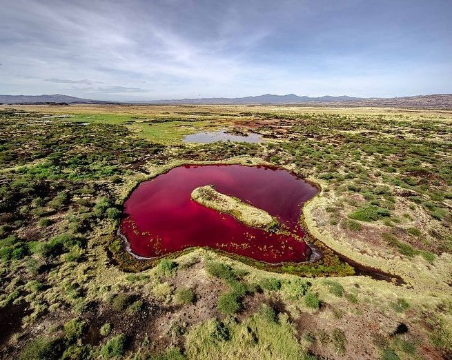

Red Lake
Off the beaten tourist path, there is a multitude of amazing natural wonders in remote northern Kenya. Like this blood-red alkaline lake in Kapedo, Turkana County. If you need a space that accelerates your adrenaline and surprises your perspective, Red Lake is the place to be. However, you have to be prepared to be friendly with the locals lest you taste the adrenaline rush associated with insecurity.

